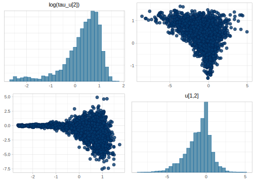
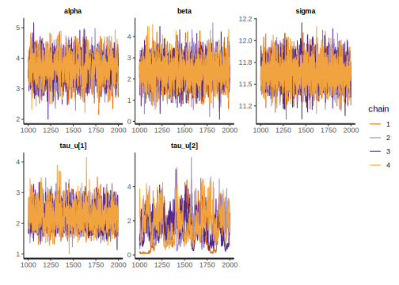
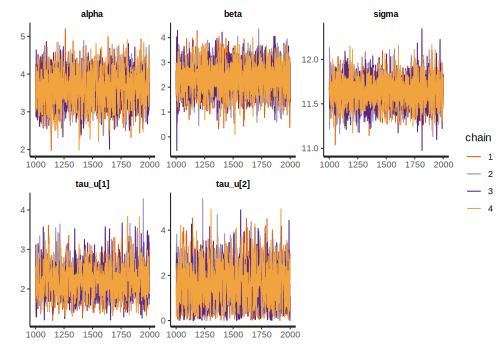
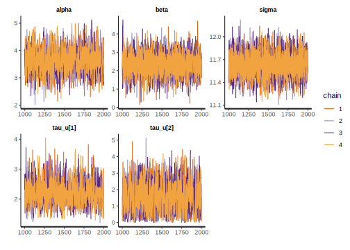
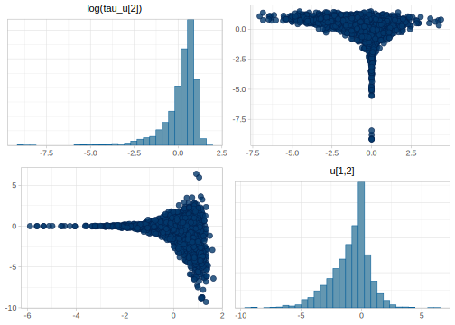
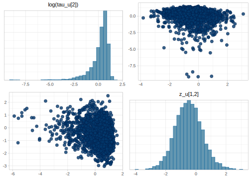
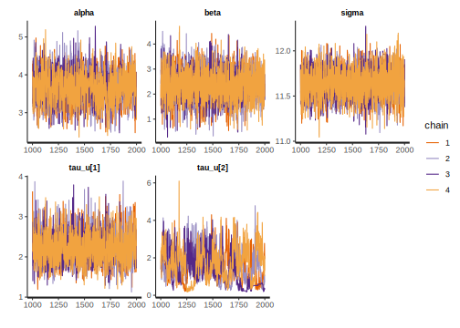
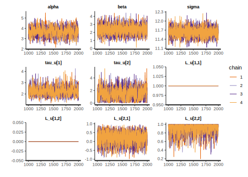
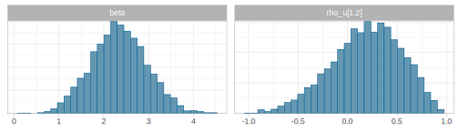

12.1 Hierarchical models with Stan
In the following sections, we will revisit and expand on some of the examples from chapter 5.
12.1.1 Varying intercept model with Stan
Recall that in section 5.1 we fit models to investigate the effect of Cloze probability on EEG averages in the N400 spatiotemporal time window. For our first model, we’ll make the (unfounded) assumption that only the average signal varies across participants, but all participants share the same effect of Cloze probability. This means that the likelihood incorporates the assumption that the intercept, \(\alpha\), is adjusted with the term \(u_i\) for each participant.
\[\begin{equation} signal_n \sim Normal(\alpha + u_{subj[n]} + c\_cloze_n \cdot \beta,\sigma) \end{equation}\]
\[\begin{equation} \begin{aligned} \alpha &\sim Normal(0,10)\\ \beta &\sim Normal(0,10)\\ u &\sim Normal(0,\tau_u)\\ \tau_{u} &\sim Normal_+(0,20) \\ \sigma &\sim Normal_+(0,50) \end{aligned} \end{equation}\]
Here \(n\) represents each observation, the \(n\)th row in the data frame and \(subj[n]\) is the participant that corresponds to observation \(n\). We present the mathematical notation of the likelihood with “multiple indexing”: the index of \(u\) is provided by the vector \(subj\).
Before we discuss the Stan implementation, let’s see how the location of the normal likelihood looks like, the vector \(\mu\). There are in total 2827 observations, that means that \(\boldsymbol{\mu}=\{\mu_1,\mu_2, \ldots, \mu_{2827}\}\), and we have 37 participants which means that \(\boldsymbol{u}=\{u_1,u_2, \ldots, u_{37}\}\). The following equality shows that the use of multiple indexing allows us to have a vector of adjustments with only 37 different elements, but that has a length of 2827.
\[\begin{equation} \begin{aligned} \boldsymbol{\mu} &= \begin{bmatrix} \mu_1 \\ \mu_2 \\ \ldots \\ \mu_{101} \\ \mu_{102} \\ \ldots \\ \mu_{215} \\ \mu_{216} \\ \mu_{217} \\ \ldots \\ \mu_{1000} \\ \ldots \\ \mu_{2827} \end{bmatrix} = \begin{bmatrix} \alpha \\ \alpha \\ \ldots \\ \alpha \\ \alpha \\ \ldots \\ \alpha \\ \alpha \\ \alpha \\ \ldots \\ \alpha \\ \ldots \\ \alpha \end{bmatrix} + \begin{bmatrix} u_{subj[1]} \\ u_{subj[2]} \\ \ldots \\ u_{subj[101]} \\ u_{subj[102]} \\ \ldots \\ u_{subj[215]} \\ u_{subj[216]} \\ u_{subj[217]} \\ \ldots \\ u_{subj[1000]} \\ \ldots \\ u_{i[2827]} \end{bmatrix} + \begin{bmatrix} ccloze_1 \\ ccloze_2 \\ \ldots \\ ccloze_{101} \\ ccloze_{102} \\ \ldots \\ ccloze_{215} \\ ccloze_{216} \\ ccloze_{217} \\ \ldots \\ ccloze_{1000} \\ \ldots \\ ccloze_{2827} \end{bmatrix} \circ \begin{bmatrix} \beta \\ \beta \\ \ldots \\ \beta \\ \beta \\ \ldots \\ \beta \\ \beta \\ \beta \\ \ldots \\ \beta \\ \ldots \\ \beta \end{bmatrix} \\ & = \begin{bmatrix} \alpha \\ \alpha \\ \ldots \\ \alpha \\ \alpha \\ \ldots \\ \alpha \\ \alpha \\ \alpha \\ \ldots \\ \alpha \\ \ldots \\ \alpha \end{bmatrix} + \begin{bmatrix} u_{1} \\ u_{1} \\ \ldots \\ u_{2} \\ u_{2} \\ \ldots \\ u_{3} \\ u_{3} \\ u_{3} \\ \ldots \\ u_{14} \\ \ldots \\ u_{37 } \end{bmatrix} + \begin{bmatrix} {-0.471} \\ {-0.441} \\ \ldots \\ {0.499} \\ {0.459} \\ \ldots \\ {0.529} \\ {-0.471} \\ {0.459} \\ \ldots \\ {-0.471} \\ \ldots \\ {0.499 } \end{bmatrix} \circ \begin{bmatrix} \beta \\ \beta \\ \ldots \\ \beta \\ \beta \\ \ldots \\ \beta \\ \beta \\ \beta \\ \ldots \\ \beta \\ \ldots \\ \beta \end{bmatrix} \end{aligned} \end{equation}\]
In this model each subject has their own intercept adjustment \(u_i\), if \(u_i\) is positive, the subject will have a more positive EEG signal than the average subject. As we discussed in 5.1.3, since we are estimating \(\alpha\) and \(u\) at the same time and we assume that the average of the \(u\)’s is 0 (since it is assumed to be normally distributed with mean of 0), whatever the subjects have in common “goes” to \(\alpha\), and \(u\) only “absorbs” the differences between participants through the variance component \(\tau_u\).
We can implement this in Stan in the following way:
data {
int<lower=1> N;
vector[N] signal;
int<lower = 1> N_subj;
vector[N] c_cloze;
// The following line creates an array of integers;
int<lower = 1, upper = N_subj> subj[N];
}
parameters {
real<lower = 0> sigma;
real<lower = 0> tau_u;
real alpha;
real beta;
vector[N_subj] u;
}
model {
target += normal_lpdf(alpha| 0,10);
target += normal_lpdf(beta | 0,10);
target += normal_lpdf(sigma | 0, 50) -
normal_lccdf(0 | 0, 50);
target += normal_lpdf(tau_u | 0, 20) -
normal_lccdf(0 | 0, 20);
target += normal_lpdf(u | 0, tau_u);
target += normal_lpdf(signal | alpha + u[subj] +
c_cloze * beta, sigma);
}
In the previous Stan code we use int<lower = 1, upper = N_subj> i[N]; to define a one-dimensional array of N elements that contains integers (bounded between 1 and N_subj). As we explain in Box 11.2, the difference between vectors and one-dimensional arrays is that vectors can only contain real numbers and can be used with matrix algebra functions, and arrays can contain any type but can’t be used in matrix algebra. Notice that we use normal_lpdf rather than normal_glm_lpdf since at the moment there is no efficient likelihood implementation of hierarchical generalized linear models.
Save the model as stan_models/hierarchical1.stan, load the data, and fit it.
df_eeg_data <- read_tsv("data/public_noun_data.txt") %>%
filter(lab=="edin") %>%
# choose only the relevant columns:
select(subject, cloze, item, n400) %>%
# we simplify the subjects id
mutate(subject = as.factor(subject) %>% as.numeric()) %>%
mutate(c_cloze= cloze/100 - mean(cloze/100) )
ls_eeg_data <- list(N=nrow(df_eeg_data),
signal = df_eeg_data$n400,
c_cloze = df_eeg_data$c_cloze,
subj = df_eeg_data$subject,
N_subj = max(df_eeg_data$subject))## mean 2.5% 97.5% n_eff Rhat
## alpha 3.63 2.80 4.45 1756 1
## beta 2.33 1.30 3.36 4729 1
## sigma 11.65 11.34 11.96 5480 1
## tau_u 2.21 1.59 3.00 2615 112.1.2 Uncorrelated varying intercept and slopes model with Stan
In the following model, we relax the strong assumption that every participant will be affected equally by the manipulation. For ease of exposition, we start by assuming that the adjustments for the intercept and slope are not correlated, as we did in section 5.1.3.
\[\begin{equation} signal_n \sim Normal(\alpha + u_{1,subj[n]} + c\_cloze_n \cdot (\beta+ u_{2,subj[n]}),\sigma) \end{equation}\]
\[\begin{equation} \begin{aligned} \alpha &\sim Normal(0,10)\\ \beta &\sim Normal(0,10)\\ u_1 &\sim Normal(0,\tau_{u_1})\\ u_2 &\sim Normal(0,\tau_{u_2})\\ \tau_{u_1} &\sim Normal_+(0,20) \\ \tau_{u_2} &\sim Normal_+(0,20) \\ \sigma &\sim Normal_+(0,50) \end{aligned} \end{equation}\]
We can implement this in Stan in the following way:
data {
int<lower=1> N;
vector[N] signal;
int<lower = 1> N_subj;
vector[N] c_cloze;
int<lower = 1, upper = N_subj> subj[N];
}
parameters {
real<lower = 0> sigma;
vector<lower = 0>[2] tau_u;
real alpha;
real beta;
matrix[N_subj, 2] u;
}
model {
target += normal_lpdf(alpha| 0,10);
target += normal_lpdf(beta | 0,10);
target += normal_lpdf(sigma | 0, 50) -
normal_lccdf(0 | 0, 50);
target += normal_lpdf(tau_u[1] | 0, 20) -
normal_lccdf(0 | 0, 20);
target += normal_lpdf(tau_u[2] | 0, 20) -
normal_lccdf(0 | 0, 20);
target += normal_lpdf(u[, 1]| 0, tau_u[1]);
target += normal_lpdf(u[, 2]| 0, tau_u[2]);
target += normal_lpdf(signal | alpha + u[subj, 1] +
c_cloze .* (beta + u[subj, 2]), sigma);
}
In the previous model, we assign the same prior distribution to both tau_u[1] and tau_u[2], and thus in principle we could have written the two statements in one (notice that we multiply by 2, because there are two PDF that need to be corrected for the truncation):
target += normal_lpdf(tau_u | 0, 20) -
2 * normal_lccdf(0 | 0, 20);Fit the model as follows:
## Warning: There were 3 chains where the estimated Bayesian Fraction of Missing Information was low. See
## http://mc-stan.org/misc/warnings.html#bfmi-low## Warning: Examine the pairs() plot to diagnose sampling problems## Warning: Bulk Effective Samples Size (ESS) is too low, indicating posterior means and medians may be unreliable.
## Running the chains for more iterations may help. See
## http://mc-stan.org/misc/warnings.html#bulk-ess## Warning: Tail Effective Samples Size (ESS) is too low, indicating posterior variances and tail quantiles may be unreliable.
## Running the chains for more iterations may help. See
## http://mc-stan.org/misc/warnings.html#tail-essWe see that there are warnings. As we increase the complexity and the number of parameters, the sampler has a harder time exploring the parameter space:
## mean 2.5% 97.5% n_eff Rhat
## alpha 3.64 2.82 4.48 1379 1.00
## beta 2.36 1.14 3.59 4329 1.00
## sigma 11.64 11.33 11.95 5213 1.00
## tau_u[1] 2.22 1.55 3.02 2233 1.00
## tau_u[2] 1.62 0.30 3.46 105 1.01
We see that tau_u[2] has a low number of effective samples (n_eff) and its chains are not mixing properly. This parameter is specially problematic because there is not too much information about it (every subject is providing only one data point), it’s quite small (in comparison with sigma), it’s bounded by zero, and there is a dependency between this parameter and u[, 2]. This makes the exploration of the sampler quite hard.
Pairs plots can be useful to uncover pathologies in the sampling, since we can visualize correlations between samples, which are in general problematic. Here we see the samples of tau_u[2] against some of the adjustments to the slope u:

Compare with tau_u[1] plotted against the by-participant adjustments to the intercept. Here, instead of funnels we see blobs, indicating no strong correlation between the parameters:

In fact, the problem that the sampler faces is more serious than what our initial plots show. Stan samples in an unconstrained space where all the parameters can range from minus infinity to infinity, and then transforms back the parameters to the constrained space that we specified, where, for example, a variance parameter is restricted to be positive. This means that Stan is actually sampling from an auxiliary parameter equivalent to log(tau_u[2]) rather than from tau_u[2]. We can use mcmc_scatter to see the actual funnel:
mcmc_pairs(as.array(fit_eeg2), pars = c("tau_u[2]", "u[1,2]"),
transform = list(`tau_u[2]` = "log"))
At the neck of the funnel, tau_u[2] is close to zero (and log(tau_u[2]) is a negative number) and thus the adjustment u is constrained to be near 0. This a problem because a step size that’s optimized to work well in the broad part of the funnel will fail to work appropriately in the neck of the funnel and vice versa; see also Neal’s funnel (Neal 2003) and the optimization chapter of Stan’s manual (https://mc-stan.org/docs/2_24/stan-users-guide/reparameterization-section.html#ref-Neal:2003).
There are two options, we might just remove the by-participant varying slope since it’s not giving us much information anyway, or we can alleviate this problem by re-parameterizing the model. In general, this is the trickiest and probably most annoying part of modeling. A model can be theoretically and mathematically sound, but still fail to converge. The best advice to solve this type of problems is to start small with simulated data where we know the true values of the parameters, and increase the complexity of the models gradually. Although in this example, the problem was clearly in the parametrization of tau_u[2], in many cases the biggest hurdle is to identify where the problem lies. Fortunately, the issue with tau_u[2] is a common problem which is easy to solve by using a non-centered parametrization (Papaspiliopoulos, Roberts, and Sköld 2007). The following Box explains the specific re-parametrization we use for the improved version of our Stan code.
The sampler can explore the parameter space more easily if its step size is appropriate for all the parameters. This is achieved when there are no strong correlations between parameters. We want to assume the following
\[\begin{equation} \mathbf{u}_{2} \sim Normal(0, \tau_{u_2}) \end{equation}\]
where \(\mathbf{u}_{2}\) is the column vector of \(u_{i,2}\)’s.
We can transform \(u_2\) to z-scores as follows
\[\begin{equation} \mathbf{u}_{raw2} =\frac{\mathbf{u}_{2} - 0}{\tau_{u_2}} \end{equation}\]
where \[\begin{equation} \mathbf{u}_{raw2} \sim Normal(0, 1) \end{equation}\]
Now \(\mathbf{u}_{raw2}\) is easier to sample because it doesn’t depend on another parameter and its scale is 1. We can derive the actual parameter we care about by doing the following
\[\begin{equation} \mathbf{u}_{2} = \mathbf{u}_{raw2} \cdot \tau_{u_2} \end{equation}\]
A question that might be raised here is whether using a non-centered parametrization is always a good idea. Betancourt and Girolami (2013) point out that the extremity of the correlation depends on the amount of data, and the efficacy of the parametrization depends on the relative strength of the data. When there is enough data this parametrization is unnecessary and can be harmful. However, cases where there is enough data to render this parametrization useless are also many times cases where the partial pooling of the hierarchical models isn’t needed in the first place. Although data from lab-size experiments seem to benefit from the non-centered parametrization, the jury is still our for larger datasets with thousands of participants from crowdsourcing websites.
The following Stan code uses the previous re-parametrization for both tau_us. Although it’s not strictly necessary for tau_u[1], it won’t hurt either and the code will be simpler.
data {
int<lower=1> N;
vector[N] signal;
int<lower = 1> N_subj;
vector[N] c_cloze;
int<lower = 1, upper = N_subj> subj[N];
}
parameters {
real<lower = 0> sigma;
vector<lower = 0>[2] tau_u;
real alpha;
real beta;
matrix[N_subj, 2] z_u;
}
transformed parameters {
matrix[N_subj, 2] u;
u[, 1] = z_u[, 1] * tau_u[1];
u[, 2] = z_u[, 2] * tau_u[2];
}
model {
target += normal_lpdf(alpha| 0,10);
target += normal_lpdf(beta | 0,10);
target += normal_lpdf(sigma | 0, 50) -
normal_lccdf(0 | 0, 50);
target += normal_lpdf(tau_u[1] | 0, 20) -
normal_lccdf(0 | 0, 20);
target += normal_lpdf(tau_u[2] | 0, 20) -
normal_lccdf(0 | 0, 20);
target += std_normal_lpdf(to_vector(z_u));
target += normal_lpdf(signal | alpha + u[subj, 1] +
c_cloze .* (beta + u[subj, 2]), sigma);
}
By re-parametrizing the model we can also optimize it more, we can convert the matrix z_u into a long column vector (in column-major order) and use a single call of std_normal_lpdf, which implements the log PDF of a standard normal distribution, a normal distribution with location 0 and scale 1. The function std_normal_lpdf is more efficient than normal_lpdf(... | 0, 1). Save the model as stan_models/hierarchical3.stan and fit it.
## mean 2.5% 97.5% n_eff Rhat
## alpha 3.62 2.77 4.50 1504 1
## beta 2.35 1.17 3.52 4517 1
## sigma 11.63 11.33 11.95 6381 1
## tau_u[1] 2.21 1.56 3.02 1576 1
## tau_u[2] 1.56 0.09 3.31 1089 1
Although the samples of tau_u[2] are still correlated with the adjustments for the slope, u[,2], these latter parameters are not the ones explored by the model, the auxiliary parameters, z_u, are the relevant ones for the sampler:
mcmc_pairs(as.array(fit_eeg3), pars = c("tau_u[2]", "u[1,2]"),
transform = list(`tau_u[2]` = "log"))
mcmc_pairs(as.array(fit_eeg3), pars = c("tau_u[2]", "z_u[1,2]"),
transform = list(`tau_u[2]` = "log"))
12.1.3 Correlated varying intercept varying slopes model
The likelihood remains identical to the model without a correlation between group-level intercepts and slopes, but priors and hyperpriors change to reflect the potential correlation between by-subject adjustments to intercepts and slopes:
\[\begin{equation} signal_n \sim Normal(\alpha + u_{subj[n],0} + c\_cloze_n \cdot (\beta + u_{subj[n],1}),\sigma) \end{equation}\]
The correlation is indicated in the priors on the adjustments for intercept \(u_{,1}\) and slope \(u_{,2}\).
- Priors: \[\begin{equation} \begin{aligned} \alpha & \sim Normal(0,10) \\ \beta & \sim Normal(0,10) \\ \sigma &\sim Normal_+(0,50)\\ {\begin{pmatrix} u_{i,1} \\ u_{i,2} \end{pmatrix}} &\sim {\mathcal {N}} \left( {\begin{pmatrix} 0\\ 0 \end{pmatrix}} ,\boldsymbol{\Sigma_u} \right) \end{aligned} \end{equation}\]
where \(i = \{1, .., N_{subj} \}\)
\[\begin{equation} \boldsymbol{\Sigma_u} = {\begin{pmatrix} \tau_{u_1}^2 & \rho_u \tau_{u_1} \tau_{u_2} \\ \rho_u \tau_{u_1} \tau_{u_2} & \tau_{u_2}^2 \end{pmatrix}} \end{equation}\]
\[\begin{equation} \begin{aligned} \tau_{u_1} &\sim Normal_+(0,20)\\ \tau_{u_2} &\sim Normal_+(0,20)\\ \rho_u &\sim LKJcorr(2) \end{aligned} \end{equation}\]
data {
int<lower=1> N;
vector[N] signal;
int<lower = 1> N_subj;
vector[N] c_cloze;
int<lower = 1, upper = N_subj> subj[N];
}
parameters {
real<lower = 0> sigma;
vector<lower = 0>[2] tau_u;
real alpha;
real beta;
matrix[N_subj, 2] u;
corr_matrix[2] rho_u;
}
model {
target += normal_lpdf(alpha| 0,10);
target += normal_lpdf(beta | 0,10);
target += normal_lpdf(sigma | 0, 50) -
normal_lccdf(0 | 0, 50);
target += normal_lpdf(tau_u[1] | 0, 20) -
normal_lccdf(0 | 0, 20);
target += normal_lpdf(tau_u[2] | 0, 20) -
normal_lccdf(0 | 0, 20);
target += lkj_corr_lpdf(rho_u | 2);
for(i in 1:N_subj)
target += multi_normal_lpdf(u[i,] |
rep_row_vector(0, 2),
quad_form_diag(rho_u, tau_u));
target += normal_lpdf(signal | alpha + u[subj, 1] +
c_cloze .* (beta + u[subj, 2]), sigma);
}In this Stan model, we use some new functions and types:
corr_matrix[n] M;defines a (square) matrix of n rows and n columns called M, symmetrical around a diagonal of ones.rep_vector(X, n)creates a vector with n columns filled with X.quad_form_diag(M, V)a quadratic form using the column vector V as a diagonal matrix (a matrix with all zeros except for its diagonal), this function corresponds in Stan to:diag_matrix(V) * M * diag_matrix(V)and in R todiag(V) %*% M %*% diag(V).
Notice that problematic aspects of the first model presented in 12.1.2 (before the reparameterization), that is dependencies between parameters, are also present here. Save the model as stan_models/hierarchical_corr.stan and fit it as follows:
## Warning: There were 28 divergent transitions after warmup. See
## http://mc-stan.org/misc/warnings.html#divergent-transitions-after-warmup
## to find out why this is a problem and how to eliminate them.## Warning: There were 4 chains where the estimated Bayesian Fraction of Missing Information was low. See
## http://mc-stan.org/misc/warnings.html#bfmi-low## Warning: Examine the pairs() plot to diagnose sampling problems## Warning: The largest R-hat is NA, indicating chains have not mixed.
## Running the chains for more iterations may help. See
## http://mc-stan.org/misc/warnings.html#r-hat## Warning: Bulk Effective Samples Size (ESS) is too low, indicating posterior means and medians may be unreliable.
## Running the chains for more iterations may help. See
## http://mc-stan.org/misc/warnings.html#bulk-ess## Warning: Tail Effective Samples Size (ESS) is too low, indicating posterior variances and tail quantiles may be unreliable.
## Running the chains for more iterations may help. See
## http://mc-stan.org/misc/warnings.html#tail-essAs we expected, there are warnings and bad mixing of the chains for tau_u[2]
## mean 2.5% 97.5% n_eff Rhat
## alpha 3.66 2.84 4.49 1306 1.00
## beta 2.35 1.16 3.58 3706 1.00
## sigma 11.64 11.32 11.96 2612 1.00
## tau_u[1] 2.21 1.56 3.04 2105 1.00
## tau_u[2] 1.56 0.28 3.39 88 1.08
Again, we need to reparametrize this model. The non-centered parametrization for this type of model is the so-called Cholesky factorization; the math and the intuition behind this parametrization is explained in Box 12.2.
Given a (symmetric positive definite or semi-definite matrix) correlation matrix \(\boldsymbol{\rho_u}\), we can get a lower triangular matrix \(\mathbf{L_u}\) such that \(\mathbf{L_u} \mathbf{L_u}^T=\boldsymbol{\rho_u}\). The matrix \(\mathbf{L_u}\) is called the Cholesky factor of \(\mathbf{\rho_u}\). Intuitively, you can think of \(L_u\) as the matrix equivalent of the square root of \(\boldsymbol{\rho_u}\).
\[\begin{equation} \mathbf{L_u} = {\begin{pmatrix} l_{11} & 0 \\ l_{21} & l_{22} \end{pmatrix}} \end{equation}\]
For a model without a correlation between adjustments for the intercept and slope, we assumed that adjustments \(u_{1}\) and \(u_{2}\) were generated by normal distributions, but now we want those adjustments to be correlated. We can use the Cholesky factor to generate correlated random variables in the following way.
- We generate uncorrelated vectors, \(z_{u_1}\) and \(z_{u_2}\), for each vector of adjustments \(u_1\) and \(u_2\), as sampled from \(Normal(0,1)\):
\[z_{u_1} \sim Normal(0,1)\] \[z_{u_2} \sim Normal(0,1)\]
- By multiplying the Cholesky factor by our \(z\)’s we generate a matrix that contains two row vectors of correlated variables (with standard deviation of 1).
\[ \mathbf{L_u}\cdot \mathbf{z_u} = {\begin{pmatrix} l_{11} & 0 \\ l_{21} & l_{22} \end{pmatrix}} {\begin{pmatrix} z_{u_{1,subj=1}} & z_{u_{1,subj=2}} & ... & z_{u_{1,subj=N_{subj}}} \\ z_{u_{2,subj=1}} & z_{u_{2,subj=2}} & ... & z_{u_{2,subj=N_{subj}}} \end{pmatrix}} \]
\[ \mathbf{L_u}\cdot \mathbf{z_u} = {\begin{pmatrix} l_{11} \cdot z_{u_{1,1}} + 0 \cdot z_{u_{2,1}} & ... & l_{11} \cdot z_{u_{1,N_{subj}}} \\ l_{21} \cdot z_{u_{1,1}} + l_{22} \cdot z_{u_{2,1}} & ... & l_{11} \cdot z_{u_{1,N_{subj}}} + l_{22} \cdot z_{u_{2,N_{subj}}} \end{pmatrix}} \]
A very informal explanation of why this works is that we are making the variable that corresponds to the slope to be a function of a scaled version of the intercept.
- The last step is to scale the previous matrix to the desired standard deviation. We define the diagonalized matrix \(diag\_matrix(\tau_u)\) as before:
\[ {\begin{pmatrix} \tau_{u_1} & 0 \\ 0 & \tau_{u_2} \end{pmatrix}} \]
And we pre-multiply it by the correlated variables with SD of 1 from before:
\[\mathbf{u} = diag\_matrix(\tau_u) \cdot \mathbf{L_u}\cdot \mathbf{z_u} = \]
\[ {\begin{pmatrix} \tau_{u_1} & 0 \\ 0 & \tau_{u_2} \end{pmatrix}} {\begin{pmatrix} l_{11} \cdot z_{u_{1,1}} & ... \\ l_{21} \cdot z_{u_{1,1}} + l_{22} \cdot z_{u_{2,1}} & ... \end{pmatrix}} \]
\[ {\begin{pmatrix} \tau_{u_1} \cdot l_{11} \cdot z_{u_{1,1}} & \tau_{u_1} \cdot l_{11} \cdot z_{u_{1,2}} & ... \\ \tau_{u_2} \cdot (l_{21} \cdot z_{u_{1,1}} + l_{22} \cdot z_{u_{2,1}}) & \tau_{u_2} \cdot (l_{21} \cdot z_{u_{1,2}} + l_{22} \cdot z_{u_{2,2}}) & ... \end{pmatrix}} \]
It might be helpful to see how one would implement this in R:
- Let’s assume a correlation of \(0.8\).
## [,1] [,2]
## [1,] 1.0 0.8
## [2,] 0.8 1.0## [,1] [,2]
## [1,] 1.0 0.0
## [2,] 0.8 0.6## [,1] [,2]
## [1,] 1.0 0.8
## [2,] 0.8 1.01 We generate uncorrelated z from a standard normal distribution assuming only 10 subjects.
## [1] -0.336 -0.347 -1.780 0.286 -1.459 0.964 -0.550 -0.294
## [9] -0.268 0.860## [1] -0.2413 1.9984 0.0288 -0.1962 0.4199 1.2495 -0.0866
## [8] 0.7659 -0.9106 -0.17012 Matrix of correlated parameters:
## [,1] [,2] [,3] [,4] [,5] [,6] [,7]
## [1,] -0.336 -0.347 -1.7798 0.286 -1.46 0.964 -0.5504
## [2,] -0.241 1.998 0.0288 -0.196 0.42 1.249 -0.0866
## [,8] [,9] [,10]
## [1,] -0.294 -0.268 0.86
## [2,] 0.766 -0.911 -0.17## [,1] [,2] [,3] [,4] [,5] [,6] [,7] [,8]
## [1,] -0.336 -0.347 -1.78 0.286 -1.459 0.964 -0.550 -0.294
## [2,] -0.413 0.921 -1.41 0.111 -0.915 1.521 -0.492 0.225
## [,9] [,10]
## [1,] -0.268 0.860
## [2,] -0.760 0.5863 We’ll use the following diagonal matrix to scale the z_u
## [,1] [,2]
## [1,] 0.2 0.00
## [2,] 0.0 0.014 We finally generate the adjustments for each subject u:
## [,1] [,2] [,3] [,4] [,5] [,6]
## [1,] -0.06717 -0.06942 -0.3560 0.05728 -0.29179 0.1928
## [2,] -0.00413 0.00921 -0.0141 0.00111 -0.00915 0.0152
## [,7] [,8] [,9] [,10]
## [1,] -0.11007 -0.05876 -0.0535 0.17197
## [2,] -0.00492 0.00225 -0.0076 0.00586## [1] 0.828## [1] 0.175## [1] 0.00903The reparameterization of the model which allows for a correlation between between adjustments for the intercepts and slopes is the following:
data {
int<lower=1> N;
vector[N] signal;
int<lower = 1> N_subj;
vector[N] c_cloze;
int<lower = 1, upper = N_subj> subj[N];
}
parameters {
real<lower = 0> sigma;
vector<lower = 0>[2] tau_u;
real alpha;
real beta;
matrix[2, N_subj] z_u;
cholesky_factor_corr[2] L_u;
}
transformed parameters {
matrix[N_subj, 2] u;
u = (diag_pre_multiply(tau_u, L_u) * z_u)';
}
model {
target += normal_lpdf(alpha| 0,10);
target += normal_lpdf(beta | 0,10);
target += normal_lpdf(sigma | 0, 50) -
normal_lccdf(0 | 0, 50);
target += normal_lpdf(tau_u[1] | 0, 20) -
normal_lccdf(0 | 0, 20);
target += normal_lpdf(tau_u[2] | 0, 20) -
normal_lccdf(0 | 0, 20);
target += lkj_corr_cholesky_lpdf(L_u | 2);
target += std_normal_lpdf(to_vector(z_u));
target += normal_lpdf(signal | alpha + u[subj, 1] +
c_cloze .* (beta + u[subj, 2]), sigma);
}
generated quantities {
corr_matrix[2] rho_u= L_u * L_u';
vector[N_subj] effect_by_subj;
for(i in 1:N_subj)
effect_by_subj[i] = beta + u[i,2];
}In this Stan model, we also created a effect_by_subject in the generated quantities. This would allow us to plot or to summarize by-subject effects of cloze probability.
The code implements the following new types and functions:
cholesky_factor_corr[2] L_u, which definesL_uas a lower triangular (\(2 \times 2\)) matrix which has to be the Cholesky factor of a correlation.diag_pre_multiply(tau_u,L_u)which makes a diagonal matrix out of the vectortau_uand multiplies it byL_u.to_vector(z_u)makes a long vector out the matrixz_uL_u ~ lkj_corr_cholesky(2);is the Cholesky factor associated with the lkj correlation distribution, such that it implies thatL_u * L_u' ~ lkj_corr(2.0);. Notice that'indicates transposition (while it ist(.)in R).
We can recover the correlation by adding in the generated quantities section a \(2 \times 2\) matrix rho_u, defined as rho_u = L_u * L_u';.
Fit the new model:
Unfortunately rstan version 2.21.1 throws spurious warnings here. This is because the Cholesky matrix has elements which are always zero or one, and thus the variance within and between changes, and thus Rhat, is not defined.29 However, the parameters of the model have an appropriate number of effective sample size, Rhat, and the chains are mixing well.
## mean 2.5% 97.5% n_eff Rhat
## alpha 3.66 2.81 4.53 1228 1
## beta 2.35 1.17 3.55 4838 1
## sigma 11.63 11.33 11.95 6284 1
## tau_u[1] 2.24 1.60 3.08 1383 1
## tau_u[2] 1.48 0.07 3.33 1025 1
## rho_u[1,1] 1.00 1.00 1.00 NaN NaN
## rho_u[1,2] 0.19 -0.56 0.79 3512 1
## rho_u[2,1] 0.19 -0.56 0.79 3512 1
## rho_u[2,2] 1.00 1.00 1.00 1425 1
## L_u[1,1] 1.00 1.00 1.00 NaN NaN
## L_u[1,2] 0.00 0.00 0.00 NaN NaN
## L_u[2,1] 0.19 -0.56 0.79 3512 1
## L_u[2,2] 0.91 0.58 1.00 2453 1
Is there a correlation between the by-participant intercept and slope?
Let’s visualize some of the posteriors:

We can’t really know if they are correlated, it’s clear that we don’t have enough data, the correlation might well be between \(-1\) and \(1\).
12.1.4 By-participant and by-items correlated varying intercept varying slopes model
We extend the previous model by adding by-items intercepts and slopes, and priors and hyperpriors that reflect the potential correlation between by-items adjustments to intercepts and slopes:
\[\begin{equation} signal_n \sim Normal(\alpha + u_{subj[n], 1} + w_{item[n], 2} + c\_cloze_n \cdot (\beta + u_{subj[n],2} + w_{item[n], 2}),\sigma) \end{equation}\]
The correlation is indicated in the priors on the adjustments for intercept \(u_{,1}\) and slopes \(u_{,2}\).
- Priors: \[\begin{equation} \begin{aligned} \alpha & \sim Normal(0,10) \\ \beta & \sim Normal(0,10) \\ \sigma &\sim Normal_+(0, 50)\\ {\begin{pmatrix} u_{i,1} \\ u_{i,2} \end{pmatrix}} &\sim {\mathcal {N}} \left( {\begin{pmatrix} 0\\ 0 \end{pmatrix}} ,\boldsymbol{\Sigma_u} \right) \\ {\begin{pmatrix} w_{i,1} \\ w_{i,2} \end{pmatrix}} &\sim {\mathcal {N}} \left( {\begin{pmatrix} 0\\ 0 \end{pmatrix}} ,\boldsymbol{\Sigma_w} \right) \end{aligned} \end{equation}\]
\[\begin{equation} \boldsymbol{\Sigma_u} = {\begin{pmatrix} \tau_{u_1}^2 & \rho_u \tau_{u_1} \tau_{u_2} \\ \rho_u \tau_{u_1} \tau_{u_1} & \tau_{u_2}^2 \end{pmatrix}} \end{equation}\]
\[\begin{equation} \begin{aligned} \tau_{u_1} &\sim Normal_+(0,20)\\ \tau_{u_2} &\sim Normal_+(0,20)\\ \rho_u &\sim LKJcorr(2) \end{aligned} \end{equation}\]
The translation to Stan looks as follows:
data {
int<lower=1> N;
vector[N] signal;
int<lower = 1> N_subj;
int<lower = 1> N_item;
vector[N] c_cloze;
int<lower = 1, upper = N_subj> subj[N];
int<lower = 1, upper = N_item> item[N];
}
parameters {
real<lower = 0> sigma;
vector<lower = 0>[2] tau_u;
vector<lower = 0>[2] tau_w;
real alpha;
real beta;
matrix[2, N_subj] z_u;
matrix[2, N_item] z_w;
cholesky_factor_corr[2] L_u;
cholesky_factor_corr[2] L_w;
}
transformed parameters {
matrix[N_subj, 2] u;
matrix[N_item, 2] w;
u = (diag_pre_multiply(tau_u, L_u) * z_u)';
w = (diag_pre_multiply(tau_w, L_w) * z_w)';
}
model {
target += normal_lpdf(alpha| 0,10);
target += normal_lpdf(beta | 0,10);
target += normal_lpdf(sigma | 0, 50) -
normal_lccdf(0 | 0, 50);
target += normal_lpdf(tau_u | 0, 20) -
2 * normal_lccdf(0 | 0, 20);
target += normal_lpdf(tau_w | 0, 20) -
2* normal_lccdf(0 | 0, 20);
target += lkj_corr_cholesky_lpdf(L_u | 2);
target += lkj_corr_cholesky_lpdf(L_w | 2);
target += std_normal_lpdf(to_vector(z_u));
target += std_normal_lpdf(to_vector(z_w));
target += normal_lpdf(signal | alpha + u[subj, 1] + w[item, 1]+
c_cloze .* (beta + u[subj, 2] + w[item, 2]), sigma);
}
generated quantities {
corr_matrix[2] rho_u = L_u * L_u';
corr_matrix[2] rho_w = L_w * L_w';
}df_eeg_data <- df_eeg_data %>%
mutate(item = as.numeric(as.factor(item)))
ls_eeg_data <- list(N = nrow(df_eeg_data),
signal = df_eeg_data$n400,
c_cloze = df_eeg_data$c_cloze,
subj = df_eeg_data$subject,
item = df_eeg_data$item,
N_subj = max(df_eeg_data$subject),
N_item = max(df_eeg_data$item))## mean 2.5% 97.5% n_eff Rhat
## alpha 3.64 2.76 4.57 1601 1.00
## beta 2.32 1.01 3.64 3490 1.00
## sigma 11.50 11.20 11.82 5209 1.00
## tau_u[1] 2.25 1.59 3.08 1604 1.00
## tau_u[2] 1.38 0.08 3.21 1162 1.00
## tau_w[1] 1.53 0.83 2.22 1199 1.00
## tau_w[2] 2.23 0.22 4.21 692 1.01
## rho_u[1,1] 1.00 1.00 1.00 NaN NaN
## rho_u[1,2] 0.14 -0.62 0.78 3666 1.00
## rho_u[2,1] 0.14 -0.62 0.78 3666 1.00
## rho_u[2,2] 1.00 1.00 1.00 258 1.00
## rho_w[1,1] 1.00 1.00 1.00 NaN NaN
## rho_w[1,2] -0.40 -0.88 0.33 1926 1.00
## rho_w[2,1] -0.40 -0.88 0.33 1926 1.00
## rho_w[2,2] 1.00 1.00 1.00 1636 1.00References
Betancourt, M. J., and Mark Girolami. 2013. “Hamiltonian Monte Carlo for Hierarchical Models.”
Neal, Radford M. 2003. “Slice Sampling.” Ann. Statist. 31 (3). The Institute of Mathematical Statistics: 705–67. https://doi.org/10.1214/aos/1056562461.
Papaspiliopoulos, Omiros, Gareth O. Roberts, and Martin Sköld. 2007. “A General Framework for the Parametrization of Hierarchical Models.” Statist. Sci. 22 (1). The Institute of Mathematical Statistics: 59–73. https://doi.org/10.1214/088342307000000014.
The lightweight interface
cmdstanrversion 0.0.0.9008 for cmdstan version 2.24.0 is not throwing this warning though.↩